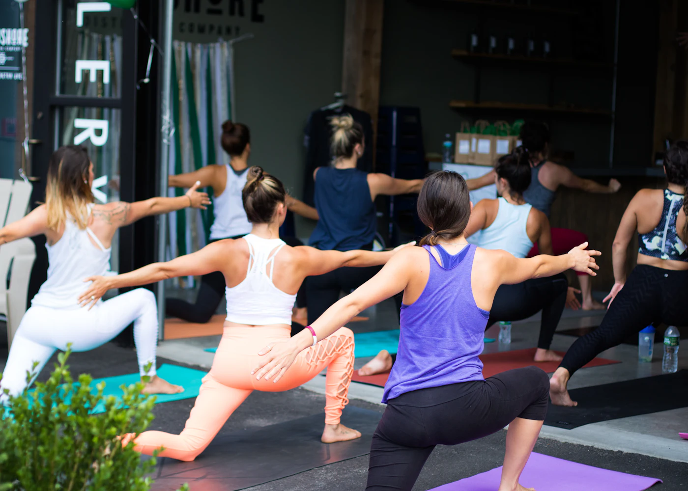

2017
A porta abre
Diogo Fernandes e Marta Cerqueira abrem a FORJA na Avenida da Liberdade, com uma ideia simples: treino acompanhado, sem julgamentos.
Braga · desde 2017
A FORJA começou com duas pessoas e uma ideia simples: um ginásio não precisa de ser um palco. Precisa de ser um lugar onde o treino faz sentido na vida real.

01 / A origem
Em 2017, Diogo Fernandes e Marta Cerqueira abriram uma porta na Avenida da Liberdade, em Braga. Havia uma sala, algum equipamento e uma convicção: as pessoas ficam quando se sentem acompanhadas — não quando se sentem observadas.
Nove anos depois, a FORJA tem 1 200 m², cinco treinadores e uma agenda com 45 aulas por semana. A ideia continua igual. Mudou o espaço. Mudaram os horários. A forma de estar, não.
02 / Manifesto
03 / Percurso
Não houve atalhos. Houve obras, horários, pessoas novas e a vontade de manter a mesma equipa por perto.
Diogo Fernandes e Marta Cerqueira abrem a FORJA na Avenida da Liberdade, com uma ideia simples: treino acompanhado, sem julgamentos.
As primeiras turmas fixas de funcional e yoga esgotam. A equipa cresce para acompanhar quem quer treinar com mais consistência.
O clube ganha o estúdio de aulas e a zona de recuperação. A mesma equipa, mais espaço e mais horários.
Começa o treino mensal ao ar livre no Parque da Ponte e o Desafio Trimestral FORJA, focado em consistência e técnica.
Novos horários, mais oferta de aulas e o mesmo compromisso: cada pessoa com um ponto de partida, não com um padrão exterior.
04 / Princípios
Quatro princípios que estão na avaliação inicial, nas aulas e na forma como falamos contigo. Não são decoração de parede.
Todos os níveis, corpos e pontos de partida. Ajustamos o exercício, não a pessoa.
Construímos técnica e consistência antes de aumentar carga. O progresso é comparado contigo, não com o vizinho.
Ninguém tem de provar nada. O ambiente é de apoio, não de competição.
Avaliação inicial, instruções claras e adaptação. Casos clínicos são encaminhados para profissionais de saúde.
05 / Comunidade
Uma vez por mês, o treino muda de cenário. O objetivo é simples: lembrar que a comunidade não vive só dentro de quatro paredes.
Primeiro sábado de cada mês, às 09h30. Aberto a membros e convidados. Traz água e uma toalha; o resto é connosco.
Quatro semanas de consistência e técnica, sem rankings de corpo. A próxima edição é anunciada na receção e no Instagram.
Calendário de eventos ilustrativo. Confirmar datas antes da publicação.

06 / O próximo capítulo
Vem conhecer a equipa e o espaço. A primeira conversa não tem compromisso — e pode ser o início de uma rotina que fica.
Marcar primeira visitaJá nos conheces? Vê o horário desta semana.